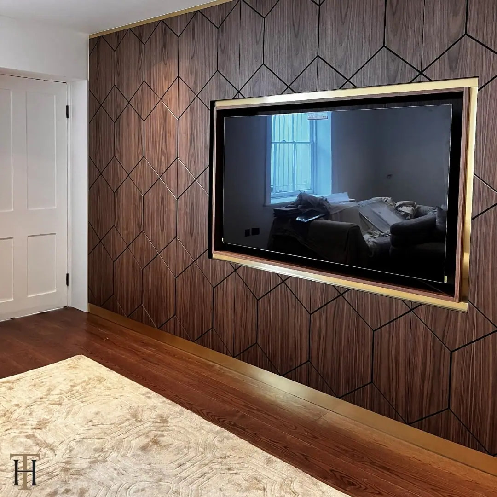

The project
One of our recent projects involved designing and installing aged brass accents on a wooden media wall in a customer’s home to enhance the room’s overall aesthetic.
The media wall features rich, dark wood panels with a geometric pattern, creating a modern and visually appealing backdrop for the television which adds visual interest and depth to the room. The aged brass accents, carefully handcrafted by our team, frame the built-in television, adding a touch of elegance and sophistication to the design.
The warm tones of the aged brass panels creates a striking contrast against the dark wood to make an eye-catching focal point. The reflective quality of the metal catches the light to add subtle highlights that draw attention to the intricate details of the media wall.
Our hand-ageing process ensures that each brass accent is unique for our customers, adding character and a bespoke finish that complements the overall design.
The decorative brass trim along the base of the wooden wall ties the look together, matching other elements within the space such as the wooden flooring and the plush area rug. The combination of materials and textures creates a harmonious environment that is both stylish and comfortable.
This metal wall art demonstrates how our aged brass or copper sheets can transform a simple feature into a statement piece, elevating the interior design of any home.


If you can dream it, we’ll make it.
Bars, balustrades, staircases, worktops, cladding and pieces that don’t have a name yet. Our designers and craftspeople work in brass, copper, zinc and steel, and alongside wood.